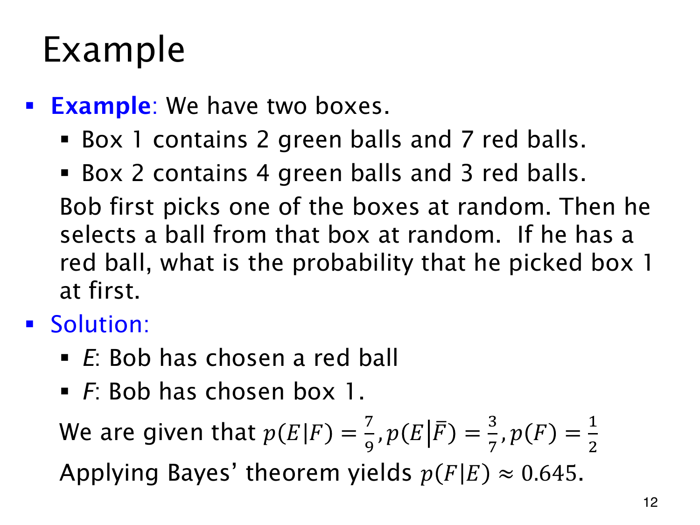

L1.10 · 第 12 页讲解原文
查看这一页课件

红球证据更支持哪个盒子
盒 1 有 2 个绿球、7 个红球；盒 2 有 4 个绿球、3 个红球。先等概率选盒，再从选定盒子中均匀抽球。已知是红球，要求最初选盒 1 的概率。
令 E 为红球，F 为盒 1，则
p(F)=p(F)=21,p(E∣F)=97,p(E∣F)=73.
代入 Bayes 公式：
p(F∣E)=(1/2)(7/9)+(1/2)(3/7)(1/2)(7/9)=7649≈0.644737.
盒 1 的红球比例更高，观察到红球后，它的概率便从 1/2 上升到约 0.645。两个先验相同，可以约去 1/2，但盒内总球数 9、7 仍须保留。
直接用 7/(7+3)=7/10，相当于假定十个红球被抽中的机会相同。实际流程中，盒 1 每个球的概率是 (1/2)(1/9)=1/18，盒 2 每个球是 (1/2)(1/7)=1/14，并不等可能。